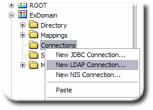
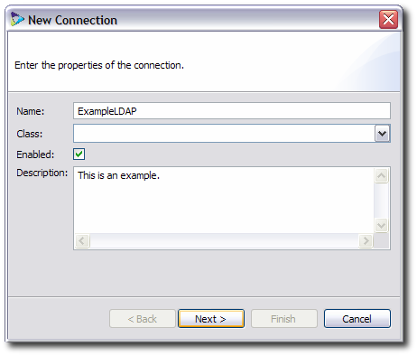
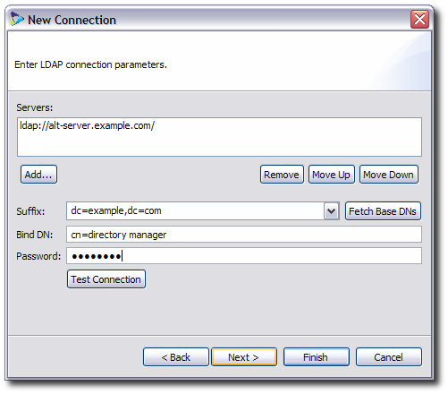
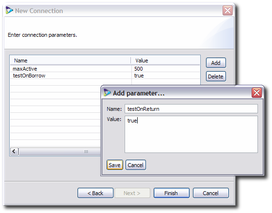
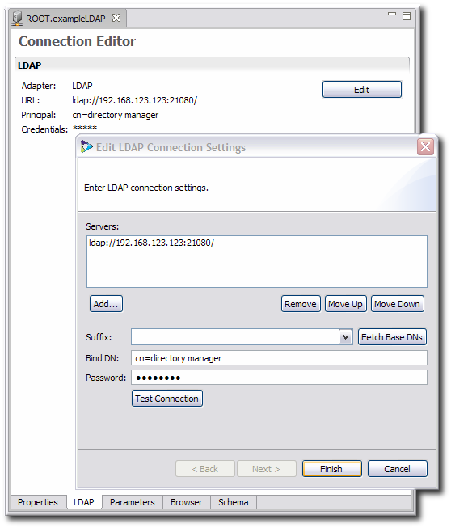

Chapter 6. Configuring Connections
A virtual directory in Penrose Virtual Directory establishes relationships between different data sources. The source exists on a connection which is, most simply, a server host and application.
This chapter covers how to add new server connections to Penrose Virtual Directory.
6.1. About Connections
A virtual directory establishes relationships between different data sources, which may not speak the same native protocol or have shared attributes, even shared entries. In Penrose Virtual Directory, the virtual directory is defined by configuring the Penrose Server to recognize data sources.
A connection is the connection information and parameters to the host machine of a data source for the virtual directory. One connection is configured automatically for the server, and there can be an unlimited number of connections for failover and for other data sources.
A connection defines kind of data source (and the service for the Penrose Server to use to connect) through adapters, a backend service used by the server. There are two adapters defined in Penrose Server for LDAP and JDBC (which includes JDBC, Microsoft SQL Server, Oracle, MySQL, PostgreSQL, ODBC, and Sybase). A NIS adapter can be added to the Penrose Server to handle NIS migrations and integration.
6.2. Adding a NIS Adapter
Adapters are abstraction layers to access data sources. LDAP and JDBC adapters are configured by default, and a NIS adapter can be configured.
Open the configuration file for the partition. For the default partition, this is in
/opt/vd-server-2.0/conf/server.xml; for added partitions, it is in/opt/vd-server-2.0/partitions/partition_name/DIR-INF/partition.xml.vim /opt/vd-server-2.0/conf/server.xml
Add the NIS adapter entry.
<adapter name="NIS"> <adapter-class>org.safehaus.penrose.nis.adapter.NISAdapter</adapter-class> </adapter>
6.3. Creating Connections in Penrose Studio
Open the server entry.
In the top menu, expand the Partitions menu item, and select the Connections folder.
Right-click Connections, and select the type of new connection to create from the menu.
Name the connection and, if necessary, give a brief description.
The Class is available for applying a custom Java class to the entry, but, if it is not given, the default class is used. The default is fine for almost all applications.
Fill in all of the connection parameters; this is different for every kind of connection. For example, for an LDAP connection:
Use the Test Connection button to make sure that the correction parameters are entered properly and that the connection server or application is available.
Optionally, fill in connection pool parameters for the connection. The LDAP and JDBC connection parameters are listed in Table 6.2, “Connection Pool Options for LDAP and JDBC”.
Click Finish.
6.4. Editing Connections in Penrose Studio
A connection can be viewed and edited in Penrose Studio. There are several tabs which correspond to a different area of the connection entry:
There is a tab named for the type of connection, such as LDAP, which allows the connection information to be changed.
The Properties tab contains all optional configuration entries for the connection, like connection pool parameters.
The Schema tab shows the object classes and attributes which are accessed through the connection.
There is also a Browser tab, which displays the entries configured within the connection.
To edit the connection:
Open the server entry.
Expand the Partitions menu item, and open the Connections folder.
Double-click the connection entry or right-click and select Open to open the entry in the main window.
In the LDAP|JDBC|NIS tab, depending on the type of connection, and change the connection parameters.
Close the main tab and save the changes when prompted.
6.5. Creating and Editing Connections Manually
Connection settings are defined in the file connections.xml. For the default partition, this file is in /opt/vd-server-2.0/conf; for additional partitions, this file is in /opt/vd-server-2.0/partitions/partition_name/DIR-INF.
<connections> main file tag <connection name="..."> begins the connection entry <adapter-name>...</adapter-name> the connection type, LDAP, JDBC, or NIS <parameter> the configuration settings, in attribute-value pairs <param-name>...</param-name> <param-value>...</param-value> </parameter> </connection> </connections>
Example 6.1. Annotated connections.xml File
To create a new connection, add a new connection entry to the connections.xml file. To edit a connection, add, remove, or edit parameters within the entry. Example 6.2, “Example connections.xml File” shows three different connection entries for a partition, for each adapter type.
IMPORTANT
Always restart Penrose Server after editing the configuration file. For example:
service vd-server restart
<connections>
<connection name="DirectoryServer">
<adapter-name>LDAP</adapter-name>
<parameter>
<param-name>maxActive</param-name>
<param-value>500</param-value>
</parameter>
<parameter>
<param-name>testOnBorrow</param-name>
<param-value>true</param-value>
</parameter>
<parameter>
<param-name>java.naming.provider.url</param-name>
<param-value>ldap://localhost/</param-value>
</parameter>
<parameter>
<param-name>java.naming.security.principal</param-name>
<param-value>cn=Directory Manager</param-value>
</parameter>
<parameter>
<param-name>java.naming.security.credentials</param-name>
<param-value>secret</param-value>
</parameter>
</connection>
<connection name="MySQL">
<adapter-name>JDBC</adapter-name>
<parameter>
<param-name>user</param-name>
<param-value>exampleuser</param-value>
</parameter>
<parameter>
<param-name>password</param-name>
<param-value>secret</param-value>
</parameter>
<parameter>
<param-name>url</param-name>
<param-value>jdbc:mysql://localhost/example?autoReconnect=true</param-value>
</parameter>
<parameter>
<param-name>driver</param-name>
<param-value>com.mysql.jdbc.Driver</param-value>
</parameter>
</connection>
<connection name="NIS">
<adapter-name>NIS</adapter-name>
<parameter>
<param-name>java.naming.factory.initial</param-name>
<param-value>com.sun.jndi.nis.NISCtxFactory</param-value>
</parameter>
<parameter>
<param-name>java.naming.provider.url</param-name>
<param-value>nis://localhost/</param-value>
</parameter>
<parameter>
<param-name>com.sun.jndi.nis.mailaliases</param-name>
<param-value>nonull</param-value>
</parameter>
<parameter>
<param-name>method</param-name>
<param-value>yp</param-value>
</parameter>
</connection>
</connections>Example 6.2. Example connections.xml File
The different configuration settings for the file are in Table 6.1, “Connection Configuration Values”.
| Configuration Setting | Description | Example |
|---|---|---|
| LDAP Connections | ||
| java.naming.provider.url | Gives a URL to a naming service on a remote machine. To specify failover machines, separate the URLs with a space, and the Penrose Server will try them in order. | ldap://remote.example.com/ |
| java.naming.security.principal | Gives the bind DN to use to connect to the LDAP service. | cn=Directory Manager |
| java.naming.security.credentials | Contains the password associated with the bind DN. | secret |
| JDBC Connections | ||
| driver | Gives the JDBC driver class name for the database. | com.mysql.jdbc.Driver |
| url | Gives the URL to connect to the database. | jdbc:mysql://localhost/example?autoReconnect=true |
| user | Gives the username to use to connect to the database. | exampleuser |
| password | Gives the password associated with the username. | secret |
| quote | Delimiter for quoting identifiers. | |
| queryTimeout | Sets the JDBC query timeout limit, in seconds. | 30 |
| NIS Connections | ||
| java.naming.factory.initial |
Sets the naming service for Penrose Server to use. The NIS JNDI service class is com.sun.jndi.nis.NISCtxFactory.
| com.sun.jndi.nis.NISCtxFactory |
| java.naming.provider.url | Gives a URL to a naming service on a remote machine. | nis://localhost/ |
| method |
Defines the way to connect to the NIS source. There are three options:
| jndi |
Table 6.1. Connection Configuration Values
LDAP and JDBC connections have addtional, optional parameters to configure the connection pool settings for the connection to the source.
| Parameter | Definition | LDAP Connection | JDBC Connection |
|---|---|---|---|
| maxActive | The maximum number of active connections that can be allocated from this pool at the same time, or zero for no limit. |

|
|
| maxIdle | The maximum number of active connections that can remain idle in the pool, without extra ones being released, or zero for no limit. |
|
|
| minIdle | The minimum number of active connections that can remain idle in the pool, without extra ones being created, or zero to create none. |
|
|
| maxWait | The maximum number of milliseconds that the pool will wait (when there are no available connections) for a connection to be returned before throwing an exception, or -1 to wait indefinitely. |
|
|
| testOnBorrow | Indicates whether objects will be validated before being borrowed from the pool. If the object fails to validate, it will be dropped from the pool, and Penrose Server attempts to borrow another. |
|
|
| testOnReturn | Indicates whether objects will be validated before being returned to the pool. |
|
|
| testWhileIdle | Indicates whether objects will be validated by the idle object evictor (if any). If an object fails to validate, it will be dropped from the pool. |
|
|
| minEvictableIdleTimeMillis | The minimum amount of time an object may sit idle in the pool before it is eligable for eviction by the idle object evictor (if any). |
|
|
| numTestsPerEvictionRun | The number of objects to examine during each run of the idle object evictor thread (if any). |
|
|
| timeBetweenEvictionRunsMillis | The number of milliseconds to sleep between runs of the idle object evictor thread. When non-positive, no idle object evictor thread will be run. |
|
|
| whenExhaustedAction | fail, block, or grow |
| |
| initialSize | The initial size of the connection pool. |
| |
| validationQuery | The SQL query that will be used to validate connections from this pool before returning them to the caller. If specified, this query MUST be an SQL SELECT statement that returns at least one row. |
|